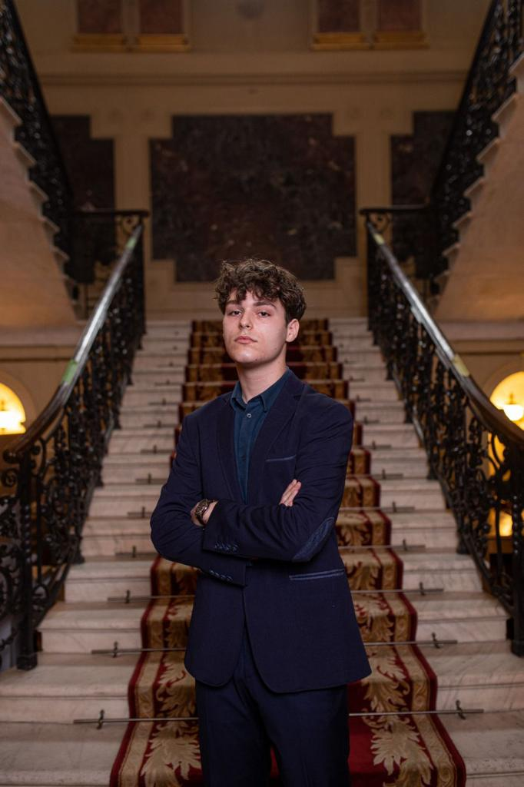

Stefan Mihai Cosmin

Summary
First year student at University Politehnica of Bucharest, Faculty of Material Science and Engineering, specializing in Medical
Engineering.
Ambitious, hard-working individual, looking for every opportunity to learn and grow
Education
"Alexandru Ioan Cuza" National College Ploiesti, Romania
Baccalaureate Diploma, Mathematics and Computer Science, intensive Computer Science
Politehnica Univeristy of Bucharest Bucuresti, Romania
Bachelor of Material Science and Engineering, specializing in Medical Engineering
Work Experience
Retail Assistant - Primark
Skills
Technical skills : HTML, CSS, C++, Microsoft Office
Soft skills : Teamwork, Public speaking, Analytical thinking
Languages : Romanian (native), English (advanced), French (intermediate)
Others